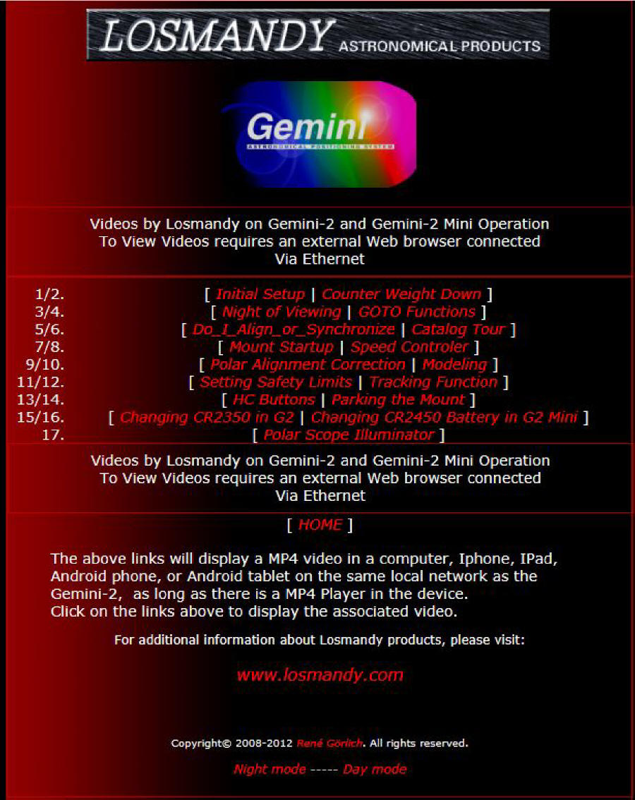

|
Gemini-2 and Gemini-1 Telescope Mount Controllers Website and Tutorials |
| Here is what the Video Selection Page. Selecting any link will display a movie in MP4 format on a connected computer, Ipad, Iphone, Androd tablet, or Android phone. |
|
 Each of the Blue names are a Link into another Video File Click on the name to go to that Video Note the video does not work yet in this demo. |
| If your Gemini-2 is connected Via Ethernet, turned ON, and Responds to http://gemini then this link will open this page in the Gemini-2 web interface, after prompting for a log-in. |